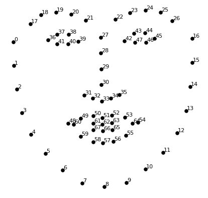
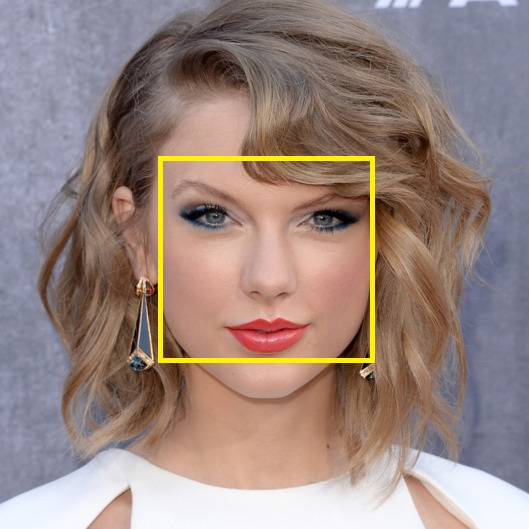
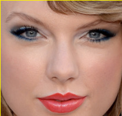

Pada zaman dimana teknologi telah berkembang pesat ini, machine learning menjadi hal yang sangat digembor-gemborkan oleh orang-orang yang berkecimpung di dunia teknologi informasi. Salah satu topik yang menarik dalam machine learning adalah face recognition. Face recognition adalah suatu penemuan yang memanfaatkan komputer untuk mengidentifikasi wajah manusia melalui gambar digital ataupun frame suatu video dari sebuah source video. Secara garis besar, yang dilakukan dalam mengenali suatu wajah adalah pertama-tama, dilakukan proses pendeteksian wajah dalam gambar dan kemudian akan dibandingkan dengan database wajah yang tersimpan dalam komputer.
Proses face recognition dapat terbagi menjadi 4 bagian, yaitu:
1. Mendeteksi semua wajah yang ada dalam gambar yang dicek.
Teknologi face detection ini telah dapat dilakukan oleh kamera dalam kurun waktu kurang lebih 10 tahun belakangan ini, dimana ketika kita ingin melakukan foto, dapat langsung terdeteksi wajah-wajah manusia yang terdapat dalam foto tersebut. Pendeteksian wajah dapat dilakukan dengan berbagai metode, salah satunya adalah metode Histogram of Oriented Gradient (HOG).
Langkah pertama yang dapat dilakukan adalah dengan cara membuat gambar menjadi hitam putih karena tidak dibutuhkan warna untuk mendeteksi adanya wajah, kemudian untuk setiap pixel pada gambar, dapat dibentuk suatu panah berarah dari area sekitar pixel tersebut yang memiliki tingkat kecerahan tinggi, hingga ke gelap melewati pixel tersebut. Panah inilah yang disebut gradien. HOG memiliki standar gabungan gradien yang membentuk sebuah wajah manusia dan kemudian dicocokkan dengan hasil deteksi wajah terbaru, jika memiliki kesamaan, maka dapat dipastikan bahwa objek yang dideteksi adalah wajah manusia.
2. Fokus pada tiap wajah yang berhasil dideteksi sehingga memastikan bahwa orang yang sama meskipun dengan berbeda posisi wajah tetap menghasilkan hasil deteksi orang yang sama nantinya.
Sering kali kita menjumpai foto orang yang sama namun dengan posisi muka yang berbeda sehingga tambah sama sekali berbeda dengan yang ada pada basisdata wajah yang jika tidak diolah, tentunya tidak akan match dengan foto apapun. Maka dari itu, posisi wajah yang berubah harus dilakukan perubahan pada saat pengolahan gambar dengan posisi mata dan mulut diubah sehingga selalu di tempat yang sesuai (seperti pada sampel data). Untuk melakukan proses ini, dapat diimplementasikan algoritma face landmark estimation. Untuk kali ini akan dibahas algoritma tersebut yang ditemukan oleh Vahid Kazemi dan Josephine Sullivan.
Pertama-tama, terdapat 68 titik dalam wajah (dapat disebut landmark) yang terdapat pada setiap wajah.
Mesin akan berusaha untuk menemukan 68 titik tersebut dalam gambar yang ditemukan, dan apabila sudah ditemukan seluruhnya, maka titik-titik tersebut yang “tertempel” pada wajah orang tersebut dapat disesuaikan posisinya dengan posisi 68 titik standar yang dimiliki (re-center), dengan kata lain sedikit mendistorsi wajah pada orang tersebut untuk kemudahan proses komputasi pada proses selanjutnya.
3. Dilakukan analisis terhadap karakteristik pada masing-masing wajah, misalkan ukuran mata, lebar kepala, ketebalan alis, dan lain lain.
Proses pengenalan wajah dilakukan dengan cara mengukur secara kuantitatif hal-hal yang terdapat dalam wajah merupakan hal yang paling “reliable” untuk dilakukan. Sebenarnya, dengan memperoleh gambar baru pada proses kedua, kita dapat langsung membandingkan foto yang ada di database foto satu persatu untuk menentukan siapa orang yang di dalam foto input. Namun, proses tersebut akan menjadi sangat lama jika jumlah foto dalam database foto yang dimiliki sangatlah besar. Proses pengukuran wajah dilakukan dengan adanya proses deep learning dengan metode Deep Convolutional Neural Network untuk men-generate 128 titik pengukuran untuk masing-masing wajah dalam gambar.
Metode men-generate 128 titik tersebut dilakukan untuk 3 gambar, yaitu gambar wajah yang ingin dideteksi, gambar wajah yang memiliki kesamaan, dan gambar wajah orang yang berbeda, dengan harapan hasil pengukuran yang dihasilkan adalah terbentuk kesamaan antara 2 gambar orang yang sama dan terbentuk perbedaan mencolok dengan orang yang benar-benar berbeda. Hal tersebut dilakukan berulang-ulang untuk berjuta foto yang ada dalam database. 128 titik pengukuran tersebut disebut juga dengan istilah embedding. Ide mengkuantifikasi data-data untuk wajah menjadi hal yang lebih baik daripada langsung menerima gambar “mentah” foto orang dan langsung menjadikannya menjadi “data”. Metode ini ditemukan oleh peneliti Google dan temuannya adalah FaceNet.
4. Melakukan komparasi wajah dan data yang diperoleh dari proses deteksi dengan wajah-wajah yang ada dari database data wajah yang dimiliki di komputer tersebut.
Penentuan nama foto orang yang terdeteksi dapat dilakukan oleh SVM (Support Vector Machine) classifier. Kita dapat “melatih” classifier tersebut dengan memberikan gambar foto orang yang baru, kemudian setelah dilakukan pengukuran, classifier diberitahu orang manakah tersebut yang memiliki kedekatan hasil pengukuran. Hasil dari classifier ini adalah nama orang dalam foto baru tersebut. Apabila keempat tahap telah dilakukan dengan baik, dapat dilakukan pengetesan pada sebuah video yang mana terdapat orang yang memiliki data dalam database komputer, dan akan terdeteksi wajah dengan berbagai pose wajah orang tersebut dan akan menuliskan nama orang tersebut.
Sebagai ilustrasi, dengan asumsi bahwa kita memiliki komputer yang memiliki basisdata terkait data-data wajah artis Hollywood, kita ingin mendeteksi, siapakah orang yang berada dalam foto dibawah ini.
Yang pertama akan dilakukan oleh komputer adalah mendeteksi wajah, dan menghasilkan hasil kurang lebih seperti gambar dibawah ini.
 Lalu, dilakukan analisa dan pengukuran terhadap wajah tersebut untuk mendapatkan data-data terkait wajah tersebut. Setelah selesai dilakukan pengukuran, maka akan dilakukan dengan perbandingan data dengan wajah-wajah yang ada dalam basisdata. Sebagai contoh, dilakukan perbandingan terhadap data wajah yang bernama Taylor Swift berikut:
Setelah dilakukan perbandingan dengan semua data, ternyata gambar hasil pendeteksian wajah memiliki kemiripan yang paling tinggi dengan data foto diatas. Sehingga dari hasil pendeteksian, dapat disimpulkan bahwa dalam gambar yang diuji, terdapat orang yang diprediksi bernama Taylor Swift.
Face recognition telah diaplikasikan oleh Facebook dan dapat dilihat ketika kita ingin menambahkan gambar, apabila kita melakukan tagging ke suatu wajah yang telah terdeteksi dalam suatu foto yang kita unggah, maka akan dilakukan penyimpanan data terkait wajah tersebut dan nama orang yang ter-tag tersebut. Setelah dilakukan proses tagging selama beberapa kali (upload beberapa kali untuk keakuratan data yang dimiliki Facebook), maka secara otomatis, jika kita ingin mengunggah foto dimana terdapat orang yang telah ter-tag, maka secara otomatis orang tersebut akan ter-tag tanpa kita harus melakukan tagging lagi satu persatu.
Face recognition dapat berguna dalam berbagai hal, termasuk dalam hal security. Masalah terbaru yang terjadi pada dunia internasional adalah adanya pengeboman pada konser Ariana Grande di kota Manchester, Inggris. Pihak kepolisian sedang menyelidiki siapa pelaku pengeboman tersebut. Terduga kuat pelaku adalah Salman Abedi, dan pihak kepolisian akan menggunakan teknologi face recognition dari setiap cctv pada bandara tempat dia berangkat dari Istanbul, Turki hingga ke Manchester, Inggris untuk mendeteksi wajah yang memiliki kesamaan tinggi dengan Salman Abedi dan untuk menggali informasi sebanyak mungkin terkait dia, misalnya dengan siapa dia bertemu di airport (mengindikasikan adanya kerjasama tim sebelum pengeboman). Selain itu, dengan face recognition pula, dapat dibantu proses penyelidikan apakah Salman Abedi melakukan perjalanan dengan menggunakan passport yang palsu.
Sumber:
https://medium.com/@ageitgey/machine-learning-is-fun-part-4-modern-face-recognition-with-deep-learning-c3cffc121d78, diakses pada tanggal 28 Mei 2017 pukul 19.22.